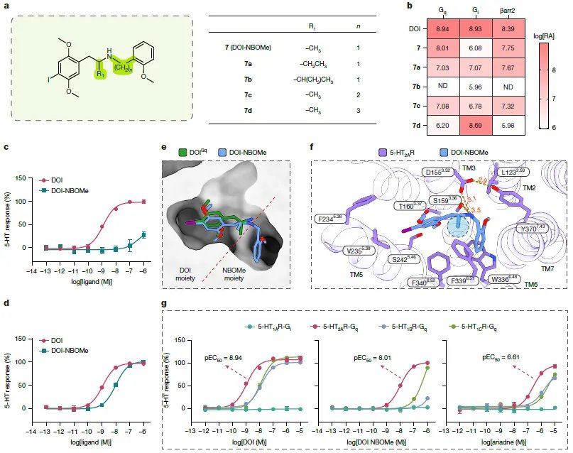

索瑟尔 𝓢𝓸𝓻𝓬𝓮𝓻𝓮𝓻🍥🏳️⚧️
@Sorcerer198964
RT @bbjk666: 2026年1月28日，四川大学华西医院研究人员在《Nature》期刊上发表研究论文。
研究显示，5-羟色胺2A受体介导的非经典Gi信号是致幻剂致幻效应的关键，同时，研究团队成功开发出新型化合物DOI-NBOMe，其在动物模型中显示出快速、持久的抗抑郁、…

背包健客
@bbjk666
2026年1月28日，四川大学华西医院研究人员在《Nature》期刊上发表研究论文。
研究显示，5-羟色胺2A受体介导的非经典Gi信号是致幻剂致幻效应的关键，同时，研究团队成功开发出新型化合物DOI-NBOMe，其在动物模型中显示出快速、持久的抗抑郁、抗焦虑效应，且没有致幻副作用，为精神疾病的治疗带来突破。 https://t.co/uz05XN0zcq